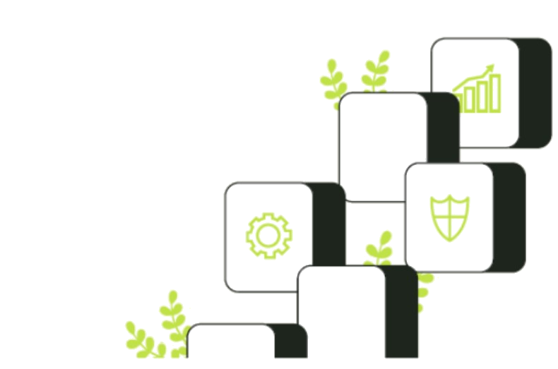
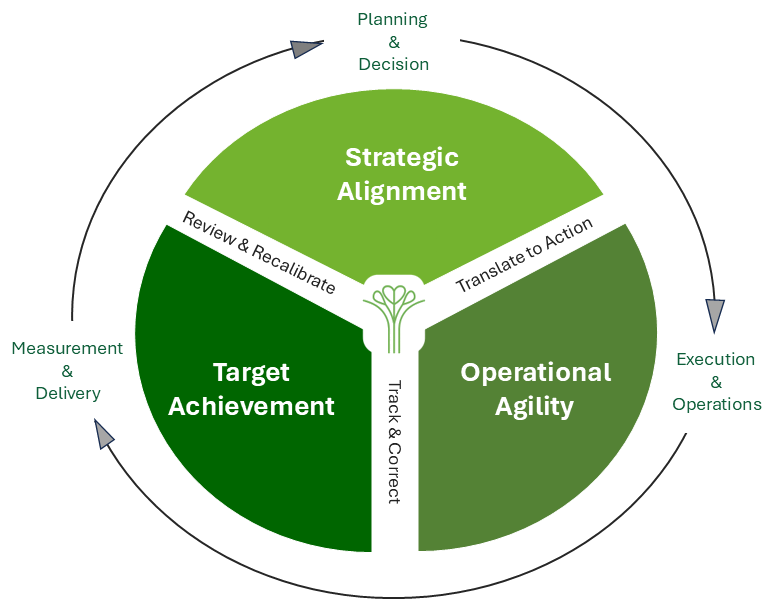

Senior leadership experience built in leading Fortune 500 companies and top‑tier institutions
Fractional CFO and senior business leadership.
We partner with your leadership team from strategy through execution
— connecting and strengthening the full operating cycle
across planning, decision-making, performance, and delivery,— without building a full senior layer in-house.
Shaped in leading multinationals, institutions, and complex cross‑border environments.
We are typically engaged when leadership teams need senior finance leadership to support clearer, more forward-looking decisions and stronger execution across strategic priorities, performance, and governance.

These gaps rarely close through isolated fixes. Sustained performance requires a connected operating cadence
— one that aligns priorities, translates them into action, and manages performance and delivery with rigour.
Connected · Integrated · Proactive · Adaptive
A proprietary operating cadence that connects planning, execution, measurement, and delivery into one continuous, adaptive system — strengthening the operating rhythm of the business from decision to delivery.
It integrates finance‑informed decision support, planning and forecasting, performance management, stakeholder‑ready reporting, and execution follow‑through — bridging the gap between boardroom intent and bottom‑line delivery.
Each cycle strengthens the next — driving clarity, agility, performance, and delivery.

The Island Capital Integrated Operating Cadence (IOC)™
Clients engage us through retained senior finance leadership or focused support in specific areas. We tailor our integrated operating approach to each business's priorities, context, and needs — helping companies navigate growth, complexity, and change across cross-border expansion, integration, restructuring, and transition.
Our primary engagement model for businesses that need senior finance leadership working alongside the leadership team — without building a full in‑house senior layer too early.
This can combine decision support, performance management, strategic execution, and selected cross‑border advisory support under one retained relationship.
Many begin with a focused engagement — in reporting, decision support, or governance — and expand into ongoing retained leadership as confidence builds.
Explore ServicesStronger performance delivery, aligned to priorities and tracked to results.
Clearer, decision‑ready reporting for boards and external stakeholders.
The right foundations in place so growth and complexity can be managed with clarity and control.
Moving priority initiatives forward when execution, coordination, and follow‑through are the real challenge.